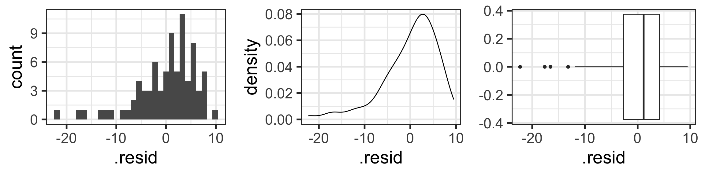
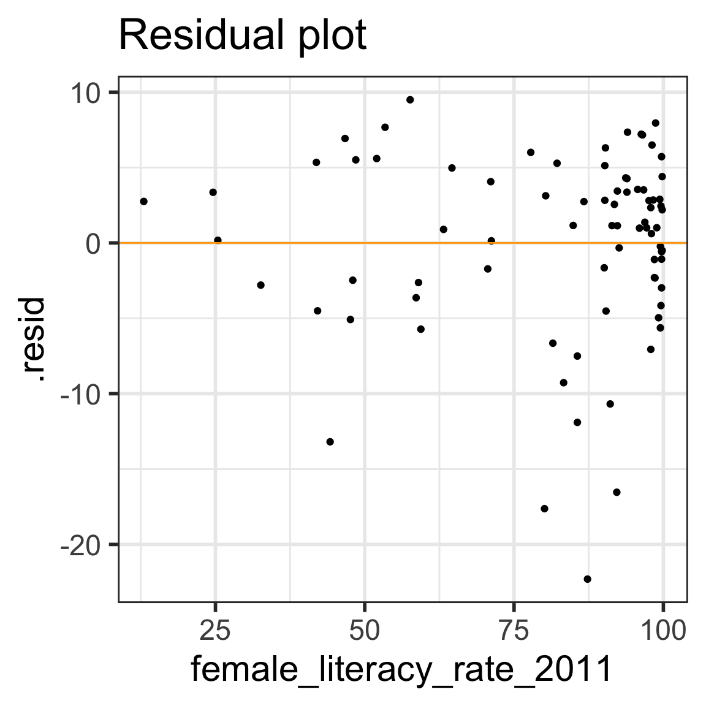

Adult literacy rate is the percentage of people ages 15 and above who can, with understanding, read and write a short, simple statement on their everyday life. Source: http://data.uis.unesco.org/
At least basic water source (%) = the percentage of people using at least basic water services. This indicator encompasses both people using basic water services as well as those using safely managed water services. Basic drinking water services is defined as drinking water from an improved source, provided collection time is not more than 30 minutes for a round trip. Improved water sources include piped water, boreholes or tubewells, protect dug wells, protected springs, and packaged or delivered water.
Rows: 194 Columns: 5
── Column specification ────────────────────────────────────────────────────────
Delimiter: ","
chr (2): country, water_2011_quart
dbl (3): life_expectancy_years_2011, female_literacy_rate_2011, water_basic_...
ℹ Use `spec()` to retrieve the full column specification for this data.
ℹ Specify the column types or set `show_col_types = FALSE` to quiet this message.
# A tibble: 2 × 13
variable n min max median q1 q3 iqr mad mean sd se
<fct> <dbl> <dbl> <dbl> <dbl> <dbl> <dbl> <dbl> <dbl> <dbl> <dbl> <dbl>
1 life_expec… 80 48 81.8 72.4 65.9 75.8 9.95 6.30 69.9 7.95 0.889
2 female_lit… 80 13 99.8 91.6 71.0 98.0 27.0 11.4 81.7 22.0 2.45
# ℹ 1 more variable: ci <dbl>
Important
Removing the rows with missing data was not needed to run the regression model.
I did this step since later we will be calculating the standard deviations of the explanatory and response variables for just the values included in the regression model. It’ll be easier to do this if we remove the missing values now.
Regression line = best-fit line
\[\widehat{y} = b_0 + b_1 \cdot x \]
\(\hat{y}\) is the predicted outcome for a specific value of \(x\).
\(b_0\) is the intercept
\(b_1\) is the slope of the line, i.e., the increase in \(\hat{y}\) for every increase of one (unit increase) in \(x\).
slope = rise over run
`geom_smooth()` using formula = 'y ~ x'
Intercept
The expected outcome for the \(y\)-variable when the \(x\)-variable is 0.
Slope
For every increase of 1 unit in the \(x\)-variable, there is an expected increase of, on average, \(b_1\) units in the \(y\)-variable.
We only say that there is an expected increase and not necessarily a causal increase.
Body measurements from 507 physically active individuals
in their 20’s or early 30’s
within normal weight range.
Examples of Normal QQ plots (2/5)
Skewed right distribution
Examples of Normal QQ plots (3/5)
Long tails in distribution
Examples of Normal QQ plots (4/5)
Bimodal distribution
Examples of Normal QQ plots (5/5)
QQ plot of residuals of model1
`stat_bin()` using `bins = 30`. Pick better value with `binwidth`.

ggplot(aug1, aes(sample = .resid)) +stat_qq() +# pointsstat_qq_line() # line
Compare to randomly generated Normal QQ plots
How “good” we can expect a QQ plot to look depends on the sample size.
The QQ plots on the next slides are randomly generated
using random samples from actual standard normal distributions \(N(0,1)\).
Thus, all the points in the QQ plots should theoretically fall in a line
However, there is sampling variability…
Randomly generated Normal QQ plots: n=100
Note that stat_qq_line() doesn’t work with randomly generated samples, and thus the code below manually creates the line that the points should be on (which is \(y=x\) in this case.)
samplesize <-100rand_qq1 <-ggplot() +stat_qq(aes(sample =rnorm(samplesize))) +# line y=xgeom_abline(intercept =0, slope =1, color ="blue") rand_qq2 <-ggplot() +stat_qq(aes(sample =rnorm(samplesize))) +geom_abline(intercept =0, slope =1, color ="blue")rand_qq3 <-ggplot() +stat_qq(aes(sample =rnorm(samplesize))) +geom_abline(intercept =0, slope =1, color ="blue")rand_qq4 <-ggplot() +stat_qq(aes(sample =rnorm(samplesize))) +geom_abline(intercept =0, slope =1, color ="blue")
ggplot(aug1, aes(x = female_literacy_rate_2011, y = .resid)) +geom_point() +geom_abline(intercept =0, slope =0, color ="orange") +labs(title ="Residual plot")

E: Equality of variance of the residuals (Homoscedasticity)
The variance or, equivalently, the standard deviation of the responses is equal for all values of x.
This is called homoskedasticity (top row)
If there is heteroskedasticity (bottom row), then the assumption is not met.
\(R^2\) = Coefficient of determination
Another way to assess model fit
\(R^2\) = Coefficient of determination (1/2)
Recall that the correlation coefficient \(r\) measures the strength of the linear relationship between two numerical variables
\(R^2\) is usually used to measure the strength of a linear fit
For a simple linear regression model (one numerical predictor), \(R^2\) is just the square of the correlation coefficient
In general, \(R^2\) is the proportion of the variability of the dependent variable that is explained by the independent variable(s)
\[R^2 = \frac{\textrm{variance of predicted y-values}}
{\textrm{variance of observed y-values}} = \frac{\sum_{i=1}^n(\widehat{y}_i-\bar{y})^2}
{\sum_{i=1}^n(y_i-\bar{y})^2}
= \frac{s_y^2 - s_{\textrm{residuals}}^2}
{s_y^2}\]\[R^2 = 1- \frac{s_{\textrm{residuals}}^2}
{s_y^2}\] where \(\frac{s_{\textrm{residuals}}^2}{s_y^2}\) is the proportion of “unexplained” variability in the \(y\) values,
and thus \(R^2 = 1- \frac{s_{\textrm{residuls}}^2}{s_y^2}\) is the proportion of “explained” variability in the \(y\) values
\(R^2\) = Coefficient of determination (2/2)
Recall, \(-1<r<1\)
Thus, \(0<R^2<1\)
In practice, we want “high” \(R^2\) values, i.e. \(R^2\) as close to 1 as possible.
Calculating \(R^2\) in R using glance() from the broom package:
Calculate the test statistic using the values in the regression table:
# recall model1_b1 is regression table restricted to b1 row(TestStat <- model1_b1$estimate / model1_b1$std.error)
[1] 7.376557
Compare this test statistic value to the one from the regression table above
\(p\)-value for testing population slope\(\beta_1\)
As usual, the \(p\)-value is the probability of obtaining a test statisticjust as extreme or more extremethan the observed test statistic assuming the null hypothesis\(H_0\)is true.
To calculate the \(p\)-value, we need to know the probability distribution of the test statistic (the null distribution) assuming \(H_0\) is true.
Statistical theory tells us that the test statistic \(t\) can be modeled by a \(t\)-distribution with \(df = n-2\).
Recall that this is a 2-sided test:
(pv =2*pt(TestStat, df=80-2, lower.tail=F))
[1] 1.501286e-10
Compare the \(p\)-value to the one from the regression table below
tidy(model1, conf.int =TRUE) %>%gt() # compare p-value calculated above to p-value in table
We are 95% confident that a new selected country with a 60% female literacy rate will have a life expectancy between 52.5 and 77.2 years.
Prediction bands vs. confidence bands (1/2)
Create a scatterplot with the regression line, 95% confidence bands, and 95% prediction bands.
First create a data frame with the original data points (both x and y values), their respective predicted values, andtheir respective prediction intervals
Can do this with augment() from the broom package.
model1_pred_bands <-augment(model1, interval ="prediction")# take a look at new object:names(model1_pred_bands)
This might seem obvious, but make sure to not write your analysis results in a way that implies causation if the study design doesn’t warrant it (such as an observational study).